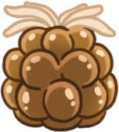
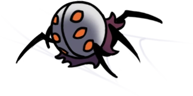

Nid-profond
Une région cachée profondément dans le coin sud-ouest d'Hallownest, grouillant de créatures de toutes formes et de tailles.
Carte
Lore
Le Nid-profond était occupée par deux groupes d'arachnides intelligents, la Tribu des Araignées, qui était autrefois l'une des espèces les plus intelligentes de la terre d'Hallownest, et les Tisserands, une tribu étrangère qui a établi sa propre histoire et sa propre culture au Nid-profond. Les deux groupes vivaient sous le règne de leur reine, Herrah la Bête, et d'un géniteur inconnu, qui était de caste honorée.
Ils régnaient depuis le Village Lointain où se trouvait le repaire d'Herrah. Le Nid-profond était souvent en conflit avec la Tribu des Mantes et le Clan des Champignons de la Caverne Nocive.
Lorsque le Roi Pâle a commencé à établir son royaume, le Village Lointain et les créatures du Nid-profond ont complètement refusé son règnexxxx. Ses efforts d'expansion se sont heurtés à une furieuse résistance. Un Tramway n'a pas pu être construit au Nid-profond à cause des bêtes qui attaquaient les ouvriers.
Après la mort du souverain du Nid-profond, Herrah devint l'unique souveraine du Nid-profond. Comme elle n'avait qu'une descendance commune, elle a conclu un accord avec le Roi Pâle pour avoir un enfant avec lui. En échange, elle deviendrait une Rêveuse pour sauver Hallownest de l'Infection. Lorsque l'enfant, xxHornetxxx, est né, Herrah s'est endormie peu de temps après, laissant le Nid-profond sans souverain officiel. Le Nid-profond fut finalement completement envahi par l'Infection, sa couvée infectée et les Tisserands ont fini par fuir en retournant dans leur ancienne maison.
Connexions
Le Nid-profond est relié à ces zones :
Ennemis
-
Bluggsac
Une créature calme, mais putride. Elle porte des oeufs rances sans ses intestins. Ces créatures se repèrent facilement si vous avez un bon sens de l'odorat. Si vous trouvez l'un de ses oeufs, je vous conseille vivement de ne pas les manger.
-
Fouisseur Incubateur
Une Créature volante. Projette des fouisseurs de son corps lorsque des proies potentielles se trouvent à proximité. Ces créatures sont-elles les mères des fouisseurs ? Elles ne se ressemblent pas tellement. Mais dans ce cas, comment les fouisseurs sont entrés à l’intérieur des incubateurs ? Tout cela porte à confusion.
-
Nécrosite
Une créature parasite prenant entièrement possession du corps de son hôte après la mort de ce dernier. Les créatures de ces terres ont trouvé un grand nombre de cachettes ingénieuses, mais aucune d'aussi créative que le corps d'une autre créature ! Si vous tombez nez à nez avec une telle créature, réjouissez-vous ! Vous allez pouvoir tuer deux créatures à la fois.
-
Araignée Cracheuse

Une créature qui rampe le long des murs et toits. Crache du venin brûlant sur tout ce qui passe. Elles sont très difficiles à repérer quand elles se faufilent dans l'obscurité. Faites attention lorsque leurs yeux brillants apparaissent.
-
Mini Araignée
Progéniture du Nid-Profond. Se faufile dans l'obscurité, tout en apprenant l'agencement de leur nid. Le Nid-profond est un endroit dangereux pour chasser, mais extrêmement gratifiant. Gardez un oeil sur les créatures les plus faibles. Vous pourrez les attraper facilement et les manger. Vous devez conserver vos forces dans l'obscurité.
-
Fouisseur
Un essaim de prédateurs de Nid-profond. Ces créatures jaillissent du sol où elles se terrent pour surprendre leurs proies. Ces chasseurs sont très souples et vicieux. Ils essaieront de vous submerger avec leur nombre, dans l'obscurité des cavernes étroites qu'ils forgent dans le sol. Restez toujours sur vos gardes.
-
Garpede
Un fouisseur géant recouvert d'une carapace renforcée. Arpente inlassablement les tunnels du Nid-Profond. Dotées d'une force monstrueuses, ces créatures ignorent toutes les attaques que leur carapace cuirassée subit. Heureusement, si vous évitez de croiser leur chemin, elles vous laisseront en paix.
-
Goam

Une bête possédant une carapace épaisse. Elle jaillit à la surface pour attraper ses proies entre ses dents. Ces bêtes semblent immunisées à la plupart des dégâts. Vous pouvez donc vous amuser à aiguiser vos armes sur leur carapace épaisse. Cela ne semble pas les déranger.
-
Larve Caméléon

Imite l'apparence d'une créature inoffensive pour attirer ses proies. Attirer un ennemi en faisant semblant d'être une petite larve sans défense est une technique très rusée. Malheureusement pour elles, je dévore ce genre de larves dès que j'en trouve.
-
Carcasse Cornue

La carapace vide d'un insecte, animé par une force étrange. Utilise sa longue corne pour attaquer toutes les créatures sur son chemin qui ne sont pas infectées. Même après leur mort, ces insectes sont tellement arrogants. Ils sont beaucoup trop fiers de leur longue corne ! J'aime bien la leur arracher.
-
Tisseuse
Une araignée agile. Se promène dans son domaine sur des toiles d'araignée très fines. Embûche souvent ses proies. Ces créatures peuvent apparaître de nulle part à tout moment ! On dirait presque qu'elles se promènent dans les airs en se déplaçant sur des fils invisibles, traquant silencieusement leurs proies dans l'obscurité.
-
Adorateur Fouineur
Adorateurs d’Herrah, la Bête. Se protègent derrière leurs pinces avant renforcées, puis attaquent soudainement pour abattre leurs proies. Puissantes, rapides et dotées d’une carapace solide, elles ne sont pas des bêtes ordinaires. Étudiez leurs mouvements et attendez le bon moment pour attaquer.
-
Carcasse Vagabonde

La carapace vide d'un insecte, animé par une force étrange. Erre sur les routes où elle vivait autrefois. Ces insectes "civilisés" d'Hallownest étaient faibles de leur vivant et ils sont tout aussi faibles après leur mort. Réduisez-les à l'état de poussière !
Boss de la Zone
Nosk
Nosk est une créature qui change de forme pour attirer ses proies jusqu'à son repaire. Il peut prendre l'apparence de créatures qu'il a aperçues dans des mémoires d'insectes, les plus souvent aimées ou défuntes, et se contorsionner jusqu'à obtenir la forme de celles-ci. Il chasse dans tout le Nid-profond et suspend ses victimes au plafond de son antre. Il est l'une des seules entités infectées dont le joueur ne peut pas connaître les pensées à l'aide de l'Aiguillon des Rêves, les autres étant le Vaisseau Corrompu et les Rampants des Ombres.
Galien
Galien est l'un des Guerrier des Rêves. Galien était un guerrier courageux et invaincu qui prétendait être le plus fort d'Hallownest et souhaitait prouver sa bravoure au Roi Pâle en tant que chevalier. Il a voyagé jusqu'au Nid-profond afin de tester sa force, mais a fini par trouver la mort à la place. Son corps gît dans une grotte remplie de champignons lumineux inhabituellement grands et d'un Cocon Sang-de-vie, sous la station de Tramway délabrée.
Évènements
- Obtention du Pass du Tramway
- Obtention d'un minerai pâle
- Obtention d'un morceau d'âme
- Obtention d'un morceau de masque
- Accès au Tramway
- Station Coléoptère : Village Lointain
- Rencontre de Cloth
- Rencontre de Quirrel
- Rencontre de Hornet
- Rencontre de Brumm (DLC)
- Rencontre de Zote le Redoutable #4
- Rencontre de Monsieur Champignon #3